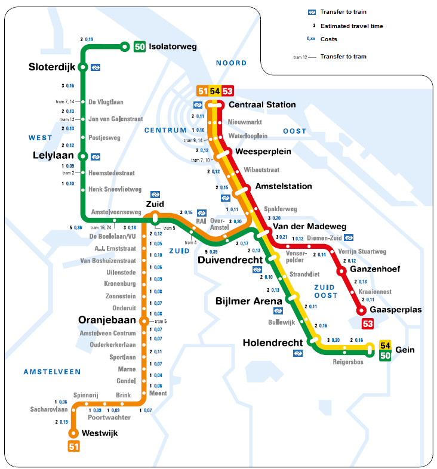

<!DOCTYPE html>
<html lang="en">
<head>
    <meta charset="utf-8" />
    <title>particles</title>

    <script src="../static/lib/d3.v4.js"></script>
    <script src="../dist/main.entry.js"></script>
    <script src="https://d3js.org/topojson.v1.min.js"></script>
   
    <style>
       div{
        /* float: left;
        margin-right: 5px; */
      }
      img{
        width: 100%;
      }
      #image{
        width: 800px;
      }
      html { width: 100%; height:100%; /*overflow:hidden;*/ }
      body{
        width: 100%;
        height:100%;
        font-family: Lato;
        margin: 0;
        padding: 0;

      }
      canvas {
          position: absolute;
          top: 0;
          left: 0;
        }
        svg{
          position: absolute;
          top: 0;
          left: 0;
        }
    </style>


</head>
<body>

  <div id='image'>
    <!--  -->
  </div>
	<div id="visFrame"></div>

	<script>


    var freq = d3.scaleLinear()
                   .domain([0, 28])
                   .range([0.1,0.8])
                //    .interpolate(d3.interpolateHcl);

 var size = d3.scaleLinear()
                   .domain([50, 100])
                   .range([50, 100])


            var json = {
            "nodes":[
              {"name":"bonjour", "id":0, "X": -300,"Y":-300},
              {"name":"hugo", "id":1, "X":-200,"Y":-200},

              // {"name":"bonjour", "id":2, "X": -230,"Y":-40},
              // {"name":"hugo", "id":3, "X":-230,"Y":-110},

              // {"name":"bonjour", "id":4, "X": -150,"Y":215},
              // {"name":"hugo", "id":5, "X":-150,"Y":-110},

              // {"name":"bonjour", "id":6, "X": -65,"Y":-00},
              // {"name":"hugo", "id":7, "X":-65,"Y":-110}
              // {"name":"France", "id":101, "textu": "images/france.png"},
              // {"name":"Germany", "id":102, "textu": "images/USA.png"},
              // {"name":"USA", "id":103, "textu": "images/germany.png"},
              // {"id": 0, "iata": "SLC", "label": "Salt Lake City Intl", "city": "Salt Lake City", "state": "UT", "country": "USA", "lat": "40.78838778", "long": "-111.9777731" }, 
              // {"id": 1, "iata": "MCO", "label": "Orlando International", "city": "Orlando", "state": "FL", "country": "USA", "lat": "28.42888889", "long": "-81.31602778"},
            ],
            "links":[
              {"source":1, "id":0, "target":0, "freq":2, "sp":80, "temp": [0.25], "width": 10, "colour": "black", "nameV": 'wheel1', "textu": "images/arow.png", 'size_': 50},
              // {"source":3, "id":0, "target":2, "freq":2, "sp":50, "temp": [0.25], "width": 10, "colour": "black", "nameV": 'wheel1', "textu": "images/arow.png", 'size_': 50},
              // {"source":5, "id":0, "target":4, "freq":2, "sp":120, "temp": [0.25], "width": 10, "colour": "black", "nameV": 'wheel1', "textu": "images/arow.png", 'size_': 50},
              // {"source":7, "id":0, "target":6, "freq":2, "sp":30, "temp": [0.25], "width": 10, "colour": "black", "nameV": 'wheel1', "textu": "images/arow.png", 'size_': 50},
            ]}
            var n = 50;
            var sizeParticule = 60;
           
            var size = 150;
            var app = flownet.graph("#visFrame", 800, 900, "#E4E4E4", 0.2)
                  .nodes(json.nodes)
                  .links(json.links)
                  .layout("linkDistance", 300)
                  .tracks("count", 1 )
                  .link_properties("curvature", 100000)
                  .link_properties("color", "#C1C1C1")
                  // .link_properties("points", [{x:-200,y:0},{x:200,y:0}])
                  .link_properties("size", 3)
                  .node_properties("opacity", 0.0)
                  .link_properties("opacity", 1.0) //function(d, i) {return color_scale_delay_dep(d.value); })
                  .node_properties("size", 5)
                  // .node_properties("size", 10)
                  .node_properties("color", 'rgba(0,0,0,0)')
                  .node_properties("label",  function(d, i) {return d.city; })
                  .node_properties("label_size", 10)
                  .node_properties("label_color", "black")
                  .node_properties("label_x", "10")
                  // .node_properties("x", function(d, i) {return 50; })
                  // .node_properties("y", function(d, i) {return (100 * i);  })
                  // .node_properties("color",  function(d, i) {return 'grey'; })
                  .node_properties("image",  function(d, i) {return d.textu; })
                  .node_properties("x", function(d, i) {return d.X;  })
                  .node_properties("y", function(d, i) {return d.Y;  })

 .tracks("color", "red")
                  .tracks("opacity", 1)

                  .particles("opacity",function(d, i) {
                    if (d.nameV == 'pollution1') return 1
                    if (d.nameV == 'pollution2') return 1
                    if (d.nameV == 'pollution3') return 1
                    return 1
                  })
                  .particles("color",function(d, i) {
                    
                    // console.log(d)
                    // if (d.nameV == 'wheel1') return '#fbe275';
                    // if (d.nameV == 'wheel2') return '#ff0000';
                    // if (d.nameV == 'carcasse') return '#45de88';
                    // if (d.nameV == 'pollution1') return '#725f5f'
                    // if (d.nameV == 'pollution2') return 'rgb(218, 223, 225)'
                    // if (d.nameV == 'pollution3') return 'rgb(218, 223, 225)'
                    return '#15309e'
                  })
                  .particles("size", function(d, i) {
                    console.log(d['size_'])
                    return 10;
                    // if (d.nameV == 'pollution1') return 100 
                    // if (d.nameV == 'pollution2') return 200 
                    // if (d.nameV == 'pollution3') return 400 
                    // else return 50
                  })
                  .particles("color", 'green', 0.5)

                  .particles("speed", function(d, i) {return d.sp})
                  .particles("pattern", function(d, i) {return [0]; })
                  // .particles("track", 0)
                  .particles("frequency", function(d, i) {return d.sp/50})
                  // .particles("texture", function(d, i) {return d.textu; })


                  .start()
                  console.log(app)
           
      

	</script>


</body>
</html>
